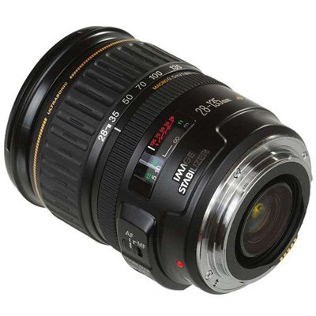

 变焦比约为5倍、覆盖28mm广角端且具有宽广焦段的标准变焦镜头。搭载有可在整个变焦范围内发挥较高补偿效果的手抖动补偿机构IS影像稳定器，使手持拍摄领域得到进一步扩展。镜头驱动方面采用了环形USM超声波马达，对焦时几乎没有动作音。而全时手动对焦功能使合焦位置的微调变得十分容易。远摄区域的焦距也是一大魅力，可在希望将被摄体拍得更大时发挥威力。135mm的焦距是远摄领域的代表性焦距，多用于人像摄影中的特写以及虚化背景、凸显主题等场合。尽管变焦比约为5倍，但镜头本身还是实现了小型化，较为轻便。最近对焦距离约为0.5米，可接近被摄体进行微距拍摄。当用于APS-C画幅EOS数码相机时，相当于约45-216mm的视角，此时的远摄区域得到进一步扩展，使镜头展现出新的魅力。虽然覆盖宽广的焦段，但性价比较高，是一款多功能型镜头。深沉忠实的显色是此款镜头的魅力所在，同时整体的成像能力也很好。
| 镜头焦距 | 28-135mm |
|---|---|
| APS-C画幅下的35mm规格换算焦距 *1 | 约45-216mm |
| 镜头结构 | 12组16片 |
| 光圈叶片 | 6片 |
| 最小光圈 *2 | 22-36 |
| 最近对焦距离 | 约0.5米 |
| 最大放大倍率 *3 | 约0.19倍 |
| 驱动系统 | 环形USM超声波马达 |
| 手抖动补偿效果 | 约2级 |
| 滤镜直径 | 72毫米 |
| 最大直径及长度 | 约Φ78.4×96.8毫米 |
| 重量 | 约540克 |